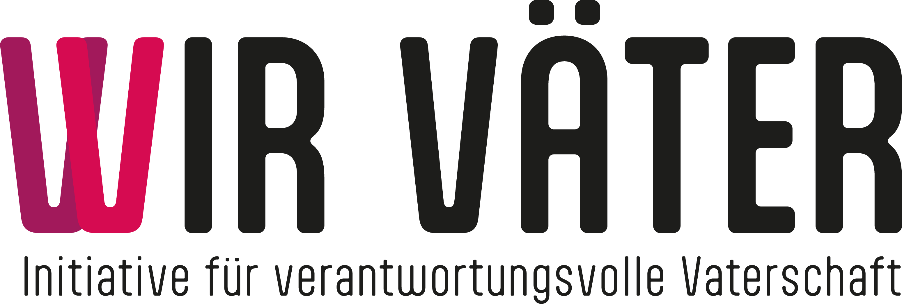

Gerecht oder Geschlecht?
60 % der Kinder sehen ihren Vater nach der Trennung höchstens alle zwei Wochen.
Statistik Austria, Unterhaltsbefragung 2021
„Deshalb setze ich mich für Doppelresidenz und geteilte Care-Arbeit ein!“
#gerechtodergeschlecht#wirvaeterwww.wir-vaeter.at
Weitere 33 % sehen ihren Vater seltener. Oder nie.
Statistik Austria, Unterhaltsbefragung 2021
„Deshalb setze ich mich für Doppelresidenz und geteilte Care-Arbeit ein!“
#gerechtodergeschlecht#wirvaeterwww.wir-vaeter.at
Doppelresidenz: Schweden 42,5 %. Österreich unter 5 %.
EU-SILC 2021
„Deshalb setze ich mich für Doppelresidenz und geteilte Care-Arbeit ein!“
#gerechtodergeschlecht#wirvaeterwww.wir-vaeter.at
Der Europarat empfiehlt die Doppelresidenz als Regelfall. Seit 2015. Österreich wartet.
Resolution 2079, Parlamentarische Versammlung des Europarats
„Deshalb setze ich mich für Doppelresidenz und geteilte Care-Arbeit ein!“
#gerechtodergeschlecht#wirvaeterwww.wir-vaeter.at
Ohne Kinder liegt der Gehaltsunterschied bei 2 %. Es ist ein Family Gap, kein Gender Gap.
DIW-Studie, Frauen 25–35 ohne Kinder oder mit kurzer Elternzeit
„Deshalb setze ich mich für Doppelresidenz und geteilte Care-Arbeit ein!“
#gerechtodergeschlecht#wirvaeterwww.wir-vaeter.at
Residenzmodell heißt: Die Mutter betreut, der Vater zahlt. Frauen an den Herd.
Das gängige Modell nach Trennungen in Österreich
„Deshalb setze ich mich für Doppelresidenz und geteilte Care-Arbeit ein!“
#gerechtodergeschlecht#wirvaeterwww.wir-vaeter.at